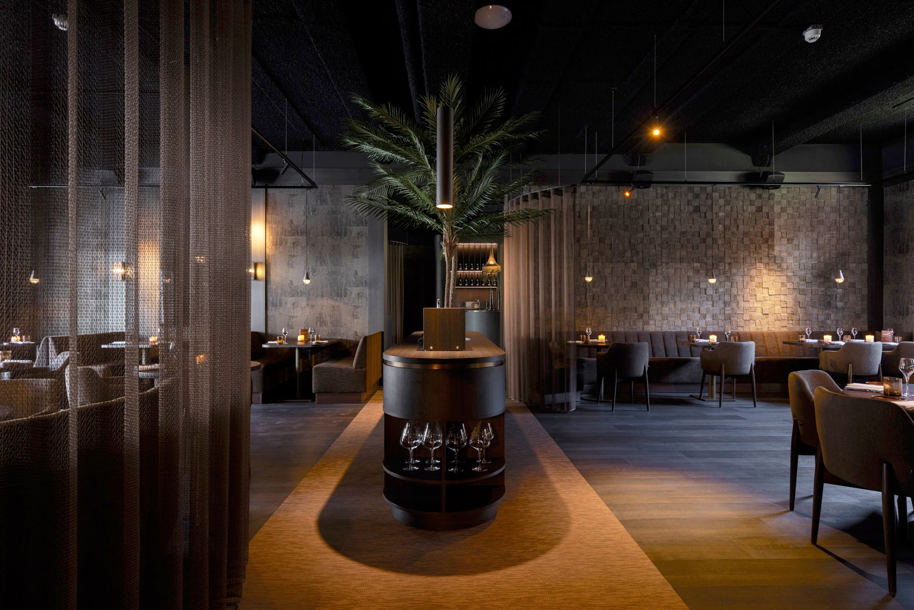
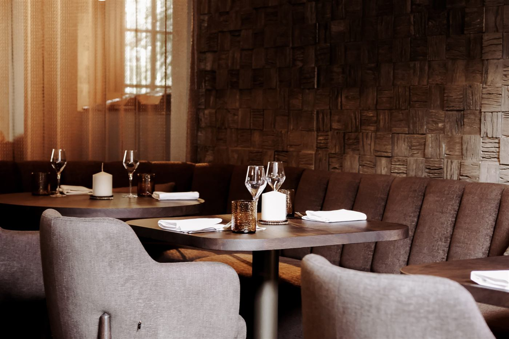
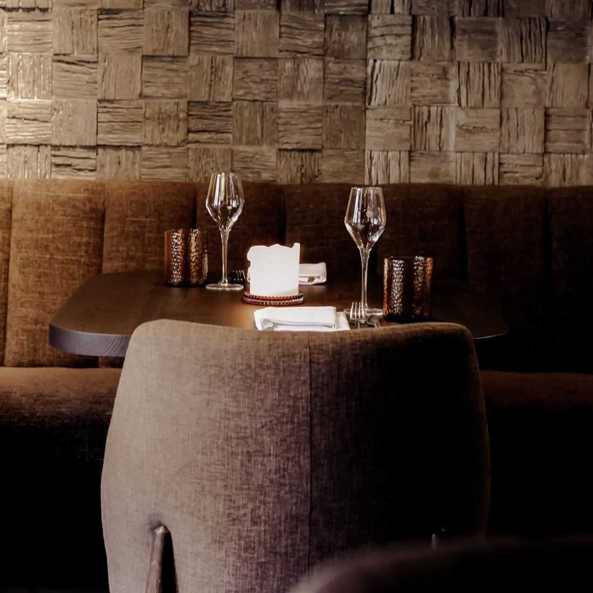
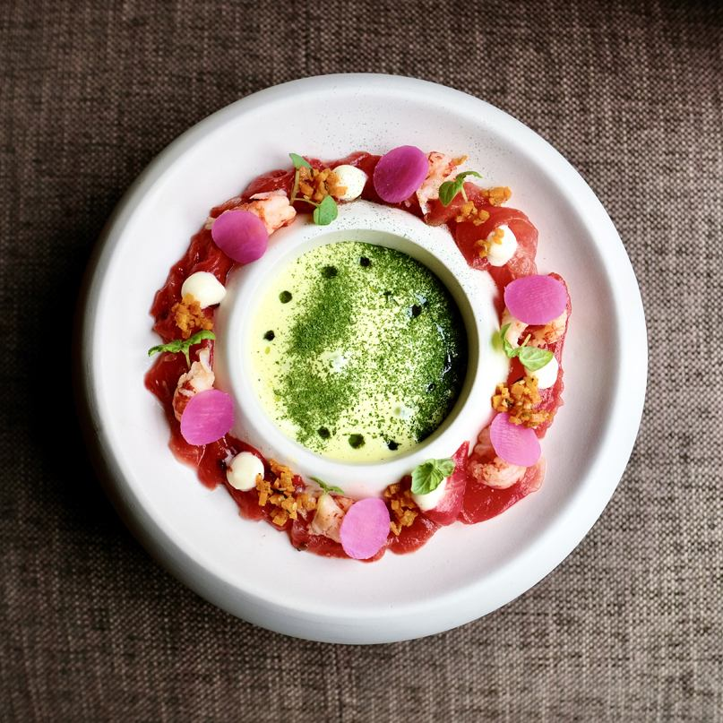
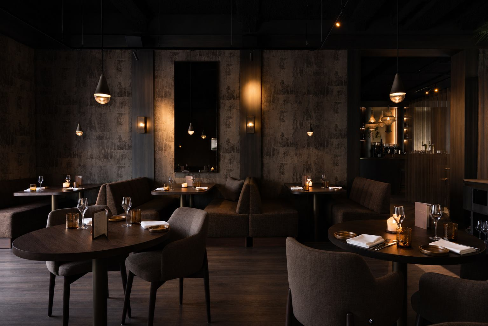
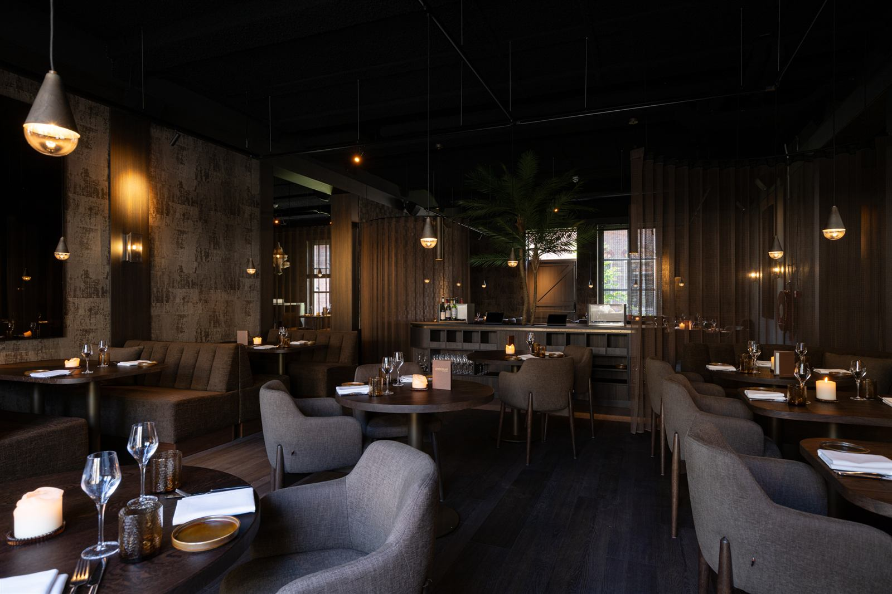
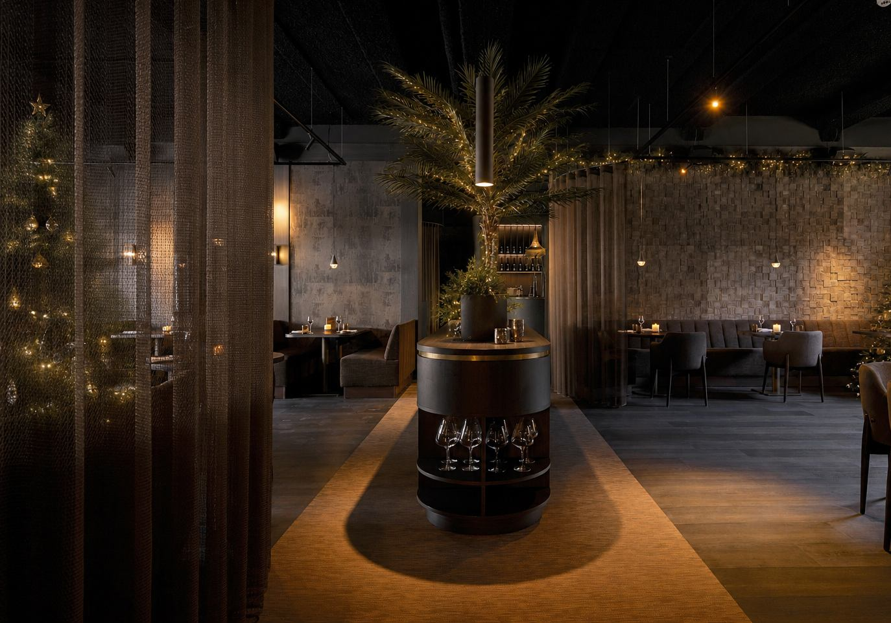

Groepen vanaf 8 personen, maandag t/m donderdag
Lunch arrangement
- Amuses en brood
- 2-gangen lunchmenu
- 2 drankjes naar keuze (huiswijn, bier en frisdranken)
- Tafelwater (plat of bruisend)
- Koffie/thee met huisgemaakte friandises
€ 59 p.p.

Internationale keuken met Franse en Oosterse invloeden, van chef-kok Dorus Clement. Voor een lunch of een uitgebreid diner, in de botanische kas aan de Parade.
Een culinair restaurant in Breda waar verfijning, gastvrijheid en culinaire creativiteit samenkomen.
Sinds juni 2025 vind je ons op onze nieuwe, inspirerende locatie in Chassé Botanique. Onze entree bevindt zich in de prachtige kas en ons sfeervolle terras ligt aan het gezellige pleintje aan de kant van de Keizerstraat.
Eigenaar en chef-kok Dorus Clement en zijn team combineren de internationale keuken met verfijnde Franse en Oosterse invloeden. Met seizoensgebonden ingrediënten creëren we verrassende gerechten: klassiek en stijlvol, maar altijd met een eigentijdse twist.
Met 14 punten in de Gault&Millau gids is Restaurant Chocolat een bijzondere plek voor een heerlijke lunch of een uitgebreid diner in Breda. Laat je verrassen door onze nieuwe creaties of geniet van vertrouwde favorieten, in een stijlvolle en ontspannen omgeving.


Verrassende gerechten, pure ingrediënten en veel liefde. Overdag een selectie smaakvolle lunchgerechten, van een lichte lunch tot een compleet lunchmenu of lunch all the way. ’s Avonds verfijnde à la carte gerechten of een 4- tot 7-gangen Gastro-menu, te combineren met zorgvuldig geselecteerde bijpassende wijnen.

Een snelle zakelijke lunch of uitgebreid genieten van een lange middag? Op ons zonnige terras of juist binnen in ons intieme restaurant, je bent van harte welkom.
Lunchgerechten
Gerookte ei-dooier · kappertjes · zoetzuur (supp. 130 gr. € 8)
Gebakken · truffel · bruine boter
Gegratineerd · dragon · Parmezaanse kaas
Scampi · venkel · rouille · brioche
Gebakken scampi · limoenmayonaise (friet of toast)
Steak tartare · pata negra · truffelroerei (supp. ganzenlever € 4)
Diamanthaas · kimchi · gefrituurde bloemkool · chili flakes
Groene asperges · suikersla · avocado · groene kruiden · komkommer
Mini hamburger · brioche steak tartare · toast krab
Ras el hanout · granaatappel · basilicum
Paddenstoelen · truffel · verse friet
Biet · granaatappel · suikersla · zuurdesem
Voorgerechten
Pompoen · ras el hanout · buikspek · granaatappel
Biet · stracciatella · zwarte olijf · oesterzwam
Vegan foie · Granny Smith · gerookte paling · yuzu
Zeebaars · komkommer · limoenblad · kokos
Suikerbrood · kropsla · truffel · belperknolle
Wagyu · pani puri · haringkaviaar · ponzu
Hoofdgerechten
Pancetta · aardappel · prei hollandaise
Sinaasappel · zuurkool · pompoen · dashi
Rendang van spitskool · vadouvan · pompoen · gepocheerd ei
Crispy chili · aardpeer · schuim van sambai
Tom yam · palmkool · gerookte aardappel
Appel · wildstoof · rode kool · sukiyaki
Nagerechten
Wisselend dessert van onze patissier
Bereidingen van pure chocolat
Bereidingen witte chocolat
4 soorten · wortel-gembercompote · kletzenbrood
Heeft u dieetwensen of allergieën? Laat het ons gerust weten, wij houden hier graag rekening mee. Daarnaast is een volledig vegetarisch menu bij ons altijd mogelijk.
Chocolat treffen we goed bereikbaar op een fraaie nieuwe locatie buiten het centrum van Breda. In het eigenzinnig interieur in een stijlvolle voormalige kazerne, waar de kleur van donkerbruine chocolade de boventoon voert en een botanische tuin voor de deur ligt, is het aangenaam toeven.Gault&Millau · lees meer
U komt binnen langs de serre waar tropische planten groeien, om vervolgens in het stijlvolle restaurant ondergedompeld te worden in de Chocolat sfeer. Dat geldt niet alleen voor de kleur van het decor, maar ook voor de creatieve keuken van Dorus Clement. Hij speelt met een rijk smakenpalet en introduceert graag uitheemse smaakmakers in gerechten met Franse flairMichelin Gids · lees meer

Chef-kok en eigenaar Dorus Clement staat al sinds zijn achttiende in professionele keukens.
Met zijn nieuwsgierigheid, creativiteit en liefde voor het vak blijft hij zoeken naar verrassende smaakcombinaties en het perfecte gerecht.
In 2017 nam hij Restaurant Chocolat over, een langgekoesterde droom. Met de verhuizing naar Chassé Botanique in 2025 brak een nieuw hoofdstuk aan. Na een grondige verbouwing werd Chocolat volledig naar eigen visie vormgegeven: een plek waar gastronomie, sfeer en beleving samenkomen.
Daarnaast begeleidt Dorus graag jonge talenten en geeft hij zijn passie voor het vak door aan de volgende generatie chefs.
Intiem en stijlvol, zakelijk of privé.
Restaurant Chocolat is een prachtige locatie voor gezelschappen. We bieden diverse mogelijkheden en arrangementen aan. Heeft u specifieke wensen? Dan maken wij graag een offerte op maat die volledig aansluit bij uw gelegenheid.
Voorafgaand aan het diner kunt u genieten van een aperitief in ons sfeervolle bar-gedeelte. Daarnaast is het ook mogelijk om uw ontvangst of borrel te verzorgen in de botanische kas, waar onze entree zich bevindt. Deze unieke, groene setting zorgt direct voor een bijzondere start van uw avond.
Voor gezelschappen serveren wij onze Gastromenu’s: tijdens de lunch een menu van 2 tot 4 gangen, tijdens het diner van 4 tot 7 gangen. À la carte dineren is voor grotere gezelschappen niet mogelijk; zo kunnen wij de kwaliteit, service en een prettig verloop voor het hele gezelschap waarborgen.
Groepen vanaf 8 personen, maandag t/m donderdag
€ 59 p.p.
Groepen vanaf 8 personen, maandag t/m donderdag
€ 89 p.p.
Liever helemaal culinair in de watten gelegd?
€ 125

Bij Chocolat zorgen we altijd voor een passende en sfeervolle tafelopstelling, afgestemd op de grootte van uw gezelschap.
Wij beschikken niet over een afgesloten privéruimte. Vanaf 50 gasten is het in overleg mogelijk om het gehele restaurant exclusief af te huren. Wij adviseren u graag over alle mogelijkheden.
Vraag een offerte aan
Eerste, tweede én derde kerstdag
Geniet van een warme, intieme sfeer en beleef een onvergetelijke kerst samen met familie of vrienden. Wij verwennen jullie graag met een feestelijke 4-gangen Kerstlunch of een 6-gangen Kerstdiner vol culinaire verrassingen.
Sluit de feestdagen in stijl af. Vier gangen Kerstdiner, inclusief bier, fris en huiswijn (19.00 – 00.00 uur). Na het hoofdgerecht transformeert de avond: onze DJ zorgt voor de muziek en jij stapt zó de dansvloer op. € 160 p.p. (all-in), toegang vanaf 16 jaar.
Het kerstmenu ’26 volgt binnenkort. Met Kerst kunnen wij beperkt rekening houden met dieetwensen; een volledig vegetarisch menu is uiteraard altijd mogelijk. Laat uw dieetwensen bij uw reservering weten.
Reserveer voor Kerst13 & 14 februari
Vier de liefde bij Chocolat! Onze chefs koken een heerlijk 6-gangen Valentijnsmenu vol verrassende smaken. Op 13 en 14 februari nodigen we jullie uit om samen te genieten van een heerlijk diner, een goed glas wijn en alle tijd voor elkaar.
€ 85 p.p., 6 gangen Love menu
ReserverenMaak iemand blij met een cadeaubon van Chocolat. Bestel hem direct online en kies voor een snelle digitale levering of bezorging via de post.
Wil je de bon liever direct in handen hebben? Loop dan gezellig bij ons binnen aan de Parade 12B in Breda (Chassé Botanique) om hem af te halen.
Bestel een cadeaubonWe zijn regelmatig op zoek naar nieuwe collega’s die net als wij houden van gastvrijheid, kwaliteit en plezier in het werk. Op dit moment zoeken wij:
Voor de bediening ben je minimaal op vrijdag óf zaterdag beschikbaar; op zondag ben je vrij, want dan zijn wij gesloten. Je komt in een hecht, jong team op een stijlvolle locatie, met ruimte om te groeien. Ook een open sollicitatie is altijd welkom.
Stuur je cv en motivatieRestaurant Chocolat
Chassé Botanique
Parade 12B, 4811 DZ Breda
076 533 59 75
reserveren@restaurant-chocolat.nl
Restaurant Chocolat bevindt zich in de botanische kas van Chassé Botanique, een unieke en groene plek in het hart van Breda. De entree ligt ín de kas zelf, die toegankelijk is via twee zijden: vanaf de Parade (achterzijde) en vanaf de Keizerstraat (voorzijde, waar ook ons zonnige terras ligt).
We delen de kas met Filmhuis, Teds, Hotel Botanique, Yogastudio Flow, La Gym en het Stadsarchief Breda.
Ontvang als eerste de nieuwste menu’s, bijzondere evenementen en andere culinaire updates. Van nieuwe gerechten tot speciale avonden: zo mis je niets.